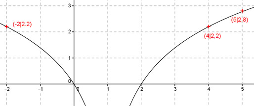

Aufgabe 106 Ergänzen Sie die Wertetabelle für den Graphen: y = ln (x - 1)2 x -2 oder 4 5 y 2,2 2,8 y = f(5) = ln (x - 1)2 = ln (5 - 1)2 = ln 42 = ln 16 = 2,8 gerundet f(x) = 2,2 eingesetzt: 2,2 = ln (x - 1)2 (x - 1)2 = e2,2 = 2,7182,2 = 9 gerundet |√ x - 1 = ± 3 |+1 x1 = 3 + 1 = 4 x1 = -3 + 1 = -2 